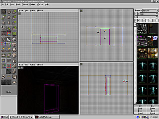

Now that we have our
room and hallway it is time to add a door. This
tutorial is a slightly more complex due to the
process that is required to create a non-scaled
mover that is the size of your door. You must perform
this process or you will be able to walk through your
door. Hopefully this process will go away in future
revisions of UnrealEd.
Download the map for this Tutorial and install
it in your C:\UNREAL\MAPS directory.
Creating the Wall and Door Jamb
Click Build Cube on
the toolbar. Shift-left Click on the
brush and move it so that it is
centered in your hallway.
Click Snap Scale Brush on
the toolbar. CTRL-Left Click or CTRL-Right
Click on the brush to scale the
brush and create a wall that seals your
hallway.
Click Add Brush to World on
the toolbar.
Under the Options
menu at the top of the screen select Rebuild.
Click Snap Scale Brush on
the toolbar. CTRL-Left Click or CTRL-Right
Click on the brush to scale the
brush to create the opening in the wall for
your door.
Click Subtract Brush
from World on the Toolbar.
Texture the new
wall and door jamb.
Under the Options
menu at the top of the screen select Rebuild.
Save your level!
Creating the Door
Click Build Cube on
the toolbar. Shift-left Click on the
brush to move it to the door jamb.
Click SnapScale Brush
on the toolbar. CTRL-Left Click or CTRL-Right
Click on the brush to scale your door to
the same size as your door jamb but thinner.
Click Add Brush to
World on the toolbar.
Texture your
door.
Under the Options
menu at the top of the screen select Rebuild.
Save your level!
Creating the Mover

Click Build Cube on
the toolbar.
Select
Brush>Reset>All from the top menu.
Right
Click Build Cube on
the toolbar. Select Properties. Set the size
to 512,512,512. Click Build to create the
large cube. Click Close.
Shift-Left
Click on the brush and move it outside
of your map.
Click Subtract Brush
from World on the Toolbar.
Right Click
on the edge of your door and select Copy
Polygons>To Brush.
Press
"B" to hide the brush.
Left Click
on your door and press Delete.
Press
"B'" to unhide the brush.
Click Camera Move. CTRL-Left
Click on the brush ( the red box) and
move it to the center of the cube that you
just made outside your map.
Click Add Brush to World on
the toolbar.
Right Click on
the edge of the large cube and select Copy
Polygons>To Brush.
Select Brush Intersection.
Shift-Left
Click on the small red brush that was
just created in the above operation and
position it where you want your door used to
be.
Click Add Movable Brush.
Under the Options
menu at the top of the screen select Rebuild.
Save your level!
Setting up the Mover and the Triggers
Right Click
on the edge of the mover and select Mover
Keyframe>Key 1.
Move the mover to
the position that you want the door to open.
Right Click
on the edge of the mover and select Mover
Keyframe>Key 0.
Right Click
on the edge of the mover and select Mover
Properties.
Click Object>Initial
State>TriggerOpenTimed.
Click Events>Tag
and enter door in the box to the
right of Tag. Close the popup menu.
In the Browse
window select Classes.
In the Browse
window, click on the "-" next to Triggers
to expand the list. Select Trigger.
Right Click near
the door and select Add Triggers Here.
Add another trigger
on the other side of the door in the same
manner.
Click on a trigger
symbol then press CTRL and select
the other trigger symbol.
Right Click on
one of the triggers and select Trigger
Properties( 2 selected ).
Click Events>Event
and enter door in the box to the
right of Event. Close the popup
menu. You should now see red lines connecting
the mover to the triggers.
Under the Options
menu at the top of the screen select Rebuild.
Save your level!
Select Play
Level under the File menu at
the top of the screen.